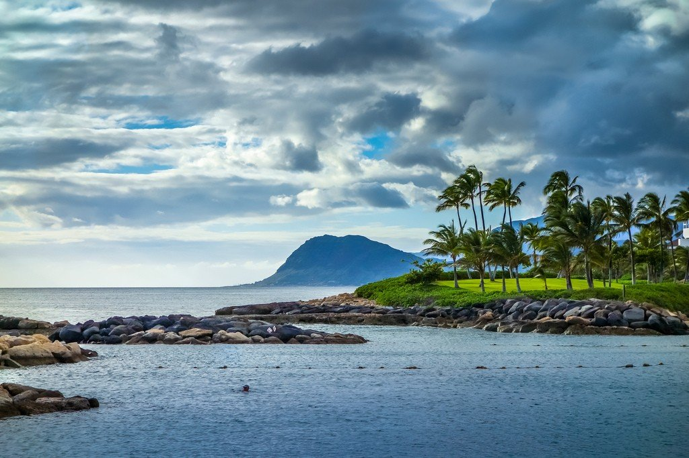
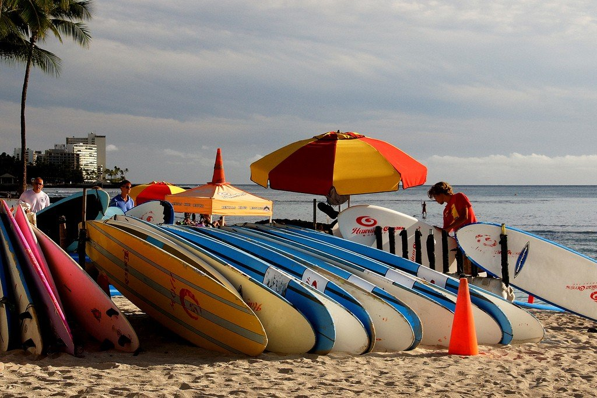

Достопримечательности
На север от центра Гонолулу находится Чайнатаун — интригующий район, который предрасполагает к открытиям. Приходить лучше на голодный желудок: там есть чем полакомиться на пан-азиатских рынках и кофейнях, в перерывах между прогулками среди замков, современных арт-галерей и лавок травников.
Дворец Иолани
В самом центре города Гонолулу это историческое место, где пала монархия, предлагает посетителям познакомиться с гавайской историей конца 19-го века. Звоните, чтобы узнать режим работы (Тел.: 808-538-1471, бронирование туров 808-522-0832/0823; www.iolanipaiace.org; 364 S King St; взрослый/детский 5-12 лет $13/6; 9.00-16.00 пн-сб).
Епископский музей
Считается самым лучшим полинезийским антропологическим музеем, где представлены выдающиеся культурные образцы, в том числе королевский Гавайский Зал. Центр науки и приключений предлагает детям оказаться в центре извергающегося вулкана. Позвоните заранее, чтобы узнать расписание Планетария (Тел.: 808-847-3511; www.bishopmuseum.org; 1525 Bernice St; взрослый/детский 4-12 лет $18/15; 9.00-17.00 ср-пн).
Академия искусств Гонолулу
Выставлена коллекция азиатского, европейского и тихоокеанского искусства, которую обязательно стоит посмотреть. Звоните, чтобы забронировать экскурсию ($25) по бывшему особняку Дориса Дьюка Шангри Ле, жемчужине исламского искусства (бронирование туров 866-385-3849; http://honolulumuseum.org/; 900 S Beretania St; взрослый/детский до 12 лет $10/free; 10.00-16.30 вт-сб, 13.00-17.00 вс).
Гавайский Государственный Музей искусств
Выставлены традиционные и современные работы мультикультуральных художников островов (www.hawaii.gov/sfca; 2nd f1,250 S Hotel St; 10.00-16.00 вт-сб, 17.00-21.00 1-я пн месяца).
Лионский древесный питомник
Природные тропы и гавайский этно-ботанический сад (www.hawaii.edu/lyonarboretum; 3860 Manoa Rd; вход по пожертвованию; 8.00-16.00 пн-пт, 9.00-15.00 сб).
Аквариум Вайкики
Фантастические познавательные экспонаты и огромные аквариумы, которых можно касаться (www.waquarium.org; 2777 Kalakaua Ave; взрослый/детский 5-12 лет/юношеский 13-17 лет $9/2/4; 9.00-17.00, вход открыт до 16.30).
Пляжи

Главное — это, конечно, длинная череда пляжей Вайкики (пригород Гонолулу). Катамараны и аутригеры предлагают морские прогулки прямо вдоль берега, чуть ли не по песку, в то время как в специальных пунктах можно взять в прокат доски для серфинга, байдарки и виндсерфинговское обмундирование, а также записаться на урок. Для того чтобы поплавать вдали от туристической суеты, можно отправиться к западу от Вайкики, где примерно в 1,5 км располагается Ала-Моана-Бич-парк (1201 Ala Moana Blvd).
Пешие маршруты
На нескольких пеших маршрутах можно найти захватывающие дух виды города, например, в зеленой части Верхнего Маноа и долине Макики над центром города и Гавайским университетом. Несколько троп невозможно достичь на автобусе, в том числе километровый маршрут к Маноа Фоле. Можно справиться на странице компании Na Ala Hele (www.hawaiitrails.org), чтобы получить адреса и расписания.
Размещение
Вайкики — самая бурлящая часть штата, и Какакауа Аве, главная пляжная линия, имеет множество отелей, но для лучших предложений следует поискать в центральной части острова. Парковка на ночь обойдется примерно в $20 или даже больше. Дешевые независимые хостелы для тусовщиков и походников расположены на Лемон-роуд.
Где выпить и развлечься
В Вайкики множество мест, где можно послушать традиционную гавайскую хулу и живую музыку. Самые модные ночные клубы в Гонолулу расположены вокруг N Hotel St и Nu'uanu Ave в Чайна-тауне, бывшем когда-то районом красных фонарей. В бесплатной газете Honolulu Weekly (www.honoluluweekly.com) можно найти афишу и описание баров, клубов, развлечений и т.п.